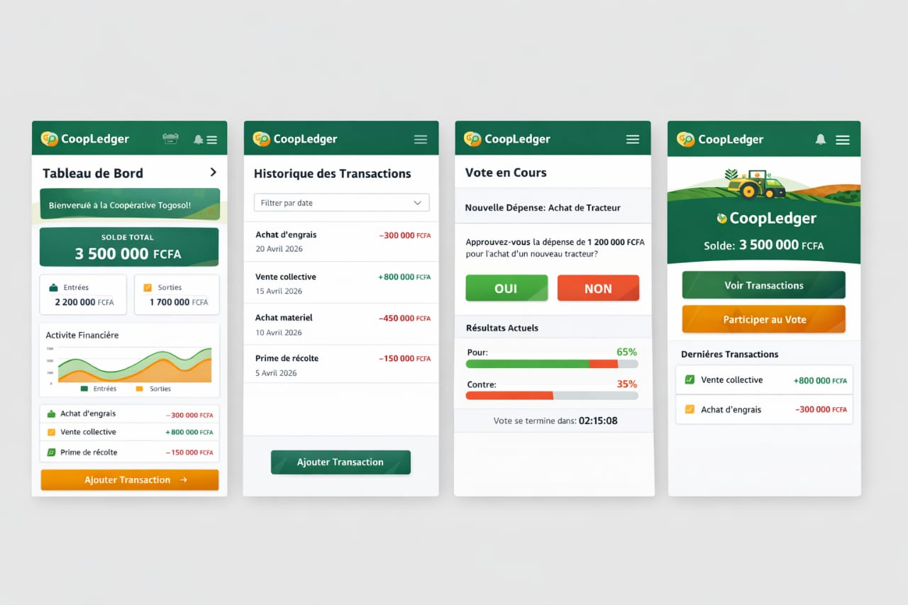

Améliorons la confiance au sein de l'agriculture Togolaise et son apport financier.
CoopLedger Sécurise la gouvernance des coopératives agricoles grâce à la puissance de la Blockchain. Transparence totale, gestion immutable et prospérité partagée pour chaque agriculteur.
Les problèmes rencontrés avec l'actuel modèle de gestion des coopérative :
Plus de 60% des coopératives agricoles togolaises tiennent leur comptabilité uniquement en cash et en papier; ce qui entraîne l'insécurité des registres (cahier) car ceux-ci peuvent être endommagés ou perdus; Cette situation entraîne aussi l'informalité des données et une perte de revenu dans le domaine agricole dû à l'usage d'un unique moyen de payement.
15 à 20% des fonds collectifs de coopératives africaine font l'objet de detournement documentés chaque année.
70% des membres de coopératives citent le manque de transparence comme principale raison de leur méfiance envers leur coopérative.
La Blockchain est la solution à ce problème.
La Blockchain est une technologie de stockage et de transmission d'informations décentralisée, sécurisée et transparente fonctionnant sans organe central de conttrôle. Voici ses avantages :
La sécurité infaillible : Fini les registres papiers perdus ou modifiés. Chaque transaction est gravée dans la Blockchain, garantissant une preuve d'existence permanente.
La transparence : Chaque membre suit l'état des comptes depuis son smartphone. La clarté financière attire les investisseurs et booste les revenus de 30 à 50%.
Gouvernance partagée : Les décisions ne se prennent plus dans l'ombre. Grâce aux Smart Contracts, chaque vote est certifié et infalsifiable.
Nous vous présentons les maquettes de CoopLedger :

Le compte à rebours du lancemant du projet a commencé !
Le projet CoopLedger débute dans :